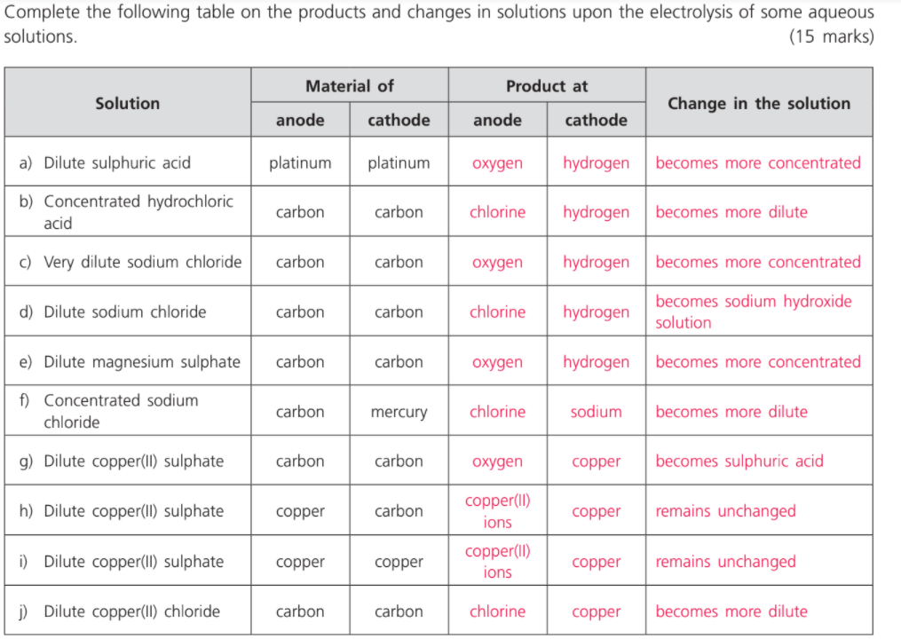

2021-07-31 (Answer)
Question 1
Fill in the table.
Question 2
Comment whether each of the following is true.
- Aqueous chlorine can decolorize acidified potassium permanganate solution.
- A compound cannot be an oxidizing agent and a reducing agent at the same time.
- Free electrons can travel through an electrolyte solution.
- Weak oxidizing agents are strong reducing agents.
- Sulfuric acid ionizes completely in water.
- An acid with a higher basicity is more basic.
F: both are oxidizing agents!
F: disproportionation reaction.
F: Mobile ions can travel through an electrolyte solution.
F: very common wrong concept! Check the ECS again.
F: the second hydrogen atom does not ionize completely.
F: basicity refers to the number of potentially ionizable hydrogen atoms in a molecule.